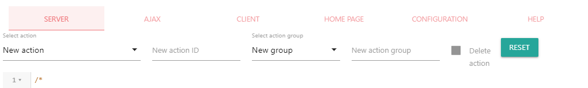
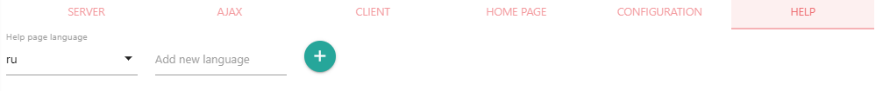
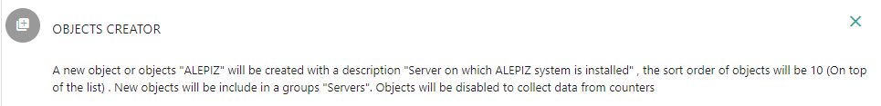

Описание Action editor
Action editor служит для создания нового или редактирования существующего действия. Для удобства в Action Editor встроен редактор JavaScript и редактор шаблонов PUG. Action editor имеет все необходимые средства для разработки действий и не требует установки дополнительных сред разработки.
Возвращаемое значение: Action ID (имя папки, в которой расположено редактируемое действие)
Описание интерфейса
Вкладки
- SERVER - вкладка позволяет установить основные параметры для действия и отредактировать или создать код JavaScript, который служит для выполнения действия на стороне сервера
- AJAX - вкладка позволяет отредактировать или создать код JavaScript, который будет обслуживать запросы на стороне сервера, необходимые для отображения интерфейса, например с помощью технологии AJAX (Asynchronous Javascript And Xml).
- CLIENT - вкладка необходима для создания или редактирования кода JavaScript, который будет запускаться в браузере и служит для формирования пользовательского интерфейса
- HOME PAGE - статическая часть пользовательского интерфейса. Для ее формирования используется шаблонизатор PUG , который в дальнейшем, используя препроцессор, формирует страницу в HTML
- CONFIGURATION - вкладка с настройками для действия в формате JSON
- HELP - редактор страниц помощи на различных языках. Для формирования страниц помощи так же используется шаблонизатор PUG , который в дальнейшем, используя препроцессор формирует страницы в HTML.
Настройки действия на вкладке SERVER
Select action
Позволяет выбрать существующее действие из списка, либо создать новое действие.
New action ID
Если вы создаете новое действие, то его ID необходимо ввести в это поле. Action ID - это папка, в которой хранятся файлы для действия. Если вы выбрали существующее действие, название Action ID появится в этом поле. Если изменить Action ID, папка с действием будет переименована. Так же будут внесены изменения в расположение действий в файле конфигурации ALEPIZ.
Select action group
В этом поле отображается группа, в которой находится действие в системном меню Actions. Можно изменить группу для действия. При изменении группы будут внесены изменения в расположение действий в файле конфигурации ALEPIZ. Группа будет удалена автоматически, если в ней не останется ни одного действия. Если создается новое действие, необходимо выбрать группу, в котором действие будет отображаться в системном меню Actions.
New action group
Если требуется создать новую группу, необходимо в это поле вести имя новой группы. При этом будут внесены изменения в расположение действий в файле конфигурации ALEPIZ.
Delete action
При выборе этого элемента выбранное действие будет удалено из системы и из файла конфигурации ALEPIZ
Reset
Сбрасывает все настройки и шаблоны в редакторах к значениям по умолчанию для нового действия.
Формирования файла помощи во вкладке HELP
Help page language
Можно выбрать страницу помощи для требуемого языка. При выборе нового языка, все текущие изменения, сделанные на странице помощи, не сохраняются. Если страницы помощи не существовало, в этом поле будет установлен язык, используемый в браузере по умолчанию. Если существует страница помощи с языком, используемым в браузере по умолчанию, она будет отображена в первую очередь. Иначе отображается страница помощи на английском языке. Если страницы помощи на языке, установленном в браузере и страницы помощи на английском языке не существует, будет отображена первая попавшаяся страница помощи.
Add new language
Если в это поле добавить новый язык и нажать на кнопку "+", он будет добавлен в список языков. Help page language. Затем можно создать страницу помощи на добавленном языке.
Разработка нового действия
Действие состоит из нескольких стандартных компонент:
- index.pug - статическая страница пользовательского интерфейса
- static\client.js - JavaScript, используемый в пользовательском интерфейсе
- ajax.js - серверная часть для формирования пользовательского интерфейса
- server.js - исполняемый код на сервере, который запускается при запуске действия на исполнение
- config.json - файл с настройками действия
- help\index.ru.pug - статическая страница помощи с описанием действия
В Action editor для всех перечисленных компонент сделаны шаблоны, используя которые можно разработать собственное действие. В этом случае действие будет выглядеть в стиле интерфейса системы ALEPIZ.
Окно для отображения действия представляет собой iframe, в котором можно разместить любую Web страницу или сделать ссылку на внешний ресурс. Это может быть Web интерфейс управления устройством, например ILO от Hewlett Packard. Так же можно создать действие самостоятельно. Использование iframe позволяет избежать пересечения пространств имен HTML и JavaScript основного интерфейса ALEPIZ и интерфейса разрабатываемого действия.
При проектировании нового действия необходимо придерживаться правила: функции, которые выполняют изменения, определенные действием, должны находиться в файле server.js. Файл ajax.js может только передавать в действие данные, необходимые для формирования пользовательского интерфейса. Таким образом пользователь будет уверен, что до тех пор, пока он не запустит действие на выполнение, не произойдут никакие изменения, определенные действием.
Подключение дополнительных модулей nodejs
Если требуется подключить внешний модуль nodejs, необходимо установить его в каталог node_modules, который должен находится в корневом каталоге разрабатываемой компоненты. Для этого можно воспользоваться утилитой npm и в корневом каталоге компоненты выполнить следующие шаги:
- создать файл package.json вручную либо запустить npm init и ответить на вопросы.
- выполнить nmp i <имя модуля>. Появится каталог node_modules в который будет установлен требуемый модуль
index.pug - страница пользовательского интерфейса
Для формирования статической страницы для пользовательского интерфейса используется шаблонизатор PUG , который, с помощью препроцессора создает страницу HTML. Чтобы быстро понять как работать с PUG приведем короткий текст из описания шаблонизатора:
В Pug нет закрывающих тегов, вместо этого он использует строгую табуляцию (или отступы) для определения вложенности тегов.
Pug: ul li Item A li Item B li Item C
HTML: <ul> <li>Item A</li> <li>Item B</li> <li>Item C</li> </ul>
Никаких специальных требований к странице пользовательского интерфейса нет. Для удобства, можно воспользоваться готовым шаблоном, предоставляемым Action editor.
Интерфейс ALEPIZ создан с помощью фреймворка materializecss. Для того, чтобы все компоненты системы выглядели в едином стиле и была возможность применения тем, необходимо использовать этот же фреймворк при разработке действий.
static\client.js - frontend скрипт
Никаких специальных требований к скрипту для формирования пользовательского интерфейса нет. В некоторых случаях такой скрипт вообще не требуется, например, если пользовательский интерфейс действия не является динамическим. Для удобства, можно воспользоваться готовым шаблоном, предоставляемым Action editor. Шаблон дополнительно подключает фреймворк jquery. Если jquery не требуется, его можно отключить.
Ниже представлен пример скрипта. После формирования пользовательского интерфейса (запуск из JQuery функции $(function () {...}) он выводит в консоль параметры из файла конфигурации действия и выбранные пользователем объекты. Выполняет AJAX запрос к серверу и выводит его результат на консоль. При изменении выбранных объектов, новый список будет выведен на консоль. При выполнении действия на консоль будет выведены информационные сообщения до и после его выполнения.
var JQueryNamespace = (function ($) {
$(function () {
console.log('Action parameters: ', parameters);
$.post(serverURL, {
userParameterName1: 'value1',
userParameterName2: 'value2'
}, function(result) {
console.log('Result from ajax: ', result);
});
});
})(jQuery); // end of jQuery name space
function onChangeObjects(objects){
console.log('The list of selected objects has changed: ', objects);
}
function callbackBeforeExec(callback) {
console.log('The function is called before the action starts.');
callback();
}
function callbackAfterExec(result, callback) {
console.log('The function is called after the action starts.');
callback();
}
В скрипте можно использовать параметры из файла конфигурации действия и информацию о выбранных пользователем объектах. Для преобразования этих данных к объекту JavaScript можно использовать следующую конструкцию:
var parameters = {
action: JSON.stringify(action),
objects: JSON.stringify(objects)
};Данные содержат следующую информацию:
- action: Системные и пользовательские параметры действия из файла конфигурации действия и, дополнительно, параметры:
- actionID - каталог для действия
- link - ссылка на текущее действие с учетом идентификатора сессии
- sessionID - идентификатор пользовательской сессии
- objects: массив из объектов, выбранных при запуске действия. Каждый объект массива содержит имя объекта и его идентификатор в базе данных в формате [{id: <Object ID1>, name: <Object Name1>}, {id: <Object ID2>, name: <Object Name2>}, ...]
Пример параметров, которые можно использовать в скрипте на стороне браузера для действия Action editor:
parameters: {
action: {
actionID: "action_editor",
ajaxServer: "ajax.js",
runActionInline: false,
startAjaxAsThread: true,
notInQueue: false,
onChangeObjectMenuEvent: "callback:onChangeObjects",
callbackBeforeExec: "callbackBeforeExec",
callbackAfterExec: "callbackAfterExec",
cleanInputIDs: "deleteAction",
description: "Create new or edit existing action",
homePage: "index",
icon: "directions_run",
launcher: "nodeModule",
launcherPrms: {
javaScript: "server.js",
startAsThread: true
},
link: "/actions/action_editor_158947905273636",
name: "Action editor",
outputFormat: "text",
sessionID: 158947905273636,
showWhenNoObjectsSelected: true,
staticDir: "static",
timeout: 60,
applyToOwnObjects: true,
runActionOnRemoteServers: true,
returnActionResult: false,
runAjaxOnRemoteServers: false,
},
objects: [{
id: 1,
name: "Servers"
},{
id: 2,
name: "ALEPIZ"
}
]
}При формировании HTML для действия в нем автоматически инициализируются несколько функций:
- getActionParametersFromBrowserURL(callback), где callback является функцией и получает массив actionParameters, состоящий из объектов, типа: [{key: <param1>, val: <value1>}, {key: <param2>, val: <value2>}, .... {}, ...]. param это название параметра, а value - его значение.
- setActionParametersFromBrowserURL(actionParameters), где actionParameters это массив, состоящий из объектов, типа: [{key: <param1>, val: <value1>}, {key: <param2>, val: <value2>}, .... {}, ...]. param это название параметра, а value - его значение.
- setActionConfig(config[, callback]), сохраняет в базу данных настройки действия для пользователя, который запустил действие. config - текст или объект с настройками действия для пользователя, callback(err) - возвращает ошибку, если настройки сохранить не удалось.
- getActionConfig(callback), загружает из базы данных сохраненные настройки действия для пользователя, который запустил действие. callback(config) - функция, которая возвращает сохраненный в базе данных текстовые данные о настройках действия для пользователя.
- log - объект с функциями log.silly(), log.debug(), log.info(), log.warn(), log.warning(), log.error() - при вызове преобразует все переданные параметры в текст и отображает полученный текст во всплывающем окне.
// set parameters
setActionParametersToBrowserURL([{
key: 'param1',
val: 'value1'
}, {
key: 'param2',
val: 'value2'
}
]);
// get parameters
getActionParametersFromBrowserURL(function(actionParametersFromURL) {
actionParametersFromURL.forEach(function(param) {
console.log("Parameters: ", param.key, "=", param.val);
}
});
// save action configuration for user to DB
setActionConfig({
param1: "This is saved parameter #1"
param2: 123,
param3: true
}, function() {
console.log("All parameters were saved successfully");
});
// get action configuration for user from DB
getActionConfig(function(actionConfigStr) {
var actionConfig = JSON.parse(actionConfigStr);
console.log(actionConfig);
});
// Show error message
try {
var actionConfig = JSON.parse(actionConfigStr);
} catch(e) {
return log.error("Can't parse action configuration: ", err.message);
}ajax.js - backend скрипт
Компонент служит для передачи данных с сервера в браузер по протоколу AJAX. Для разработки компонента необходимо использовать nodejs. Для удобства разработки сам протокол экранирован от разработчика. Для получения параметров от клиента служит объект args. Некоторые параметры передаются системой.
{
actionName: <Название действия>,
actionID: <Название каталога, в котором находится действие>,
username: <Имя пользователя, под которым запущено действие>,
userParameterName1: "value1",
userParameterName2: "value2",
....
}Значение, возвращаемое callback функцией будет передано в браузер во frontend скрипт. Если установлена настройка runAjaxOnRemoteServers: true, ajax.js будет выполняться на всех связанных экземплярах ALEPIZ. В этом случае результат выполнения ajax.js будет возвращен в виде:
{
"<serverAddress1>:<serverPort1>": <actionResult1>,
"<serverAddress2>:<serverPort2>": <actionResult2>,
....
}Где
- serverAddress - адрес или имя удаленного сервера
- serverPort - порт удаленного сервера
- actionResult - результат, возвращаемый ajax.js скриптом с удаленного сервера.
В некоторых случаях использование компонента ajax.js не требуется. Например, если нет необходимости в передаче каких-то данных с сервера на клиента для формирования пользовательского интерфейса.
В примере ниже скрипт получает параметры от клиентского скрипта и возвращает их же обратно через функцию callback
var log = require('../../lib/log')(module);
module.exports = function(args, callback) {
log.debug('Starting ajax ' + __filename + ' with parameters', args);
// return all received parameters back to the client
callback(null, args);
};
server.js - исполняемый код действия
Компонент является исполняемым кодом для действия, который будет запущен после запуска действия. Для разработки компонента необходимо использовать nodejs. Для удобства разработки протокол передачи параметров экранирован от разработчика. Для получения параметров от клиента служит объект args. В этот объект попадают все значения интерактивных элементов пользовательского интерфейса HTML, которые имеют атрибут id или name. Например:
<input type="text" name="userParameterName1" value="value1"/> <input type="textarea" id="userParameterName2">value12</textarea>
Некоторые параметры передаются системой.
{
actionName: <Название действия>,
actionID: <Название каталога, в котором находится действие>,
username: <Имя пользователя, под которым запущено действие>,
userParameterName1: "value1",
userParameterName2: "value2",
....
}Значение, возвращаемое функцией callback будет значением, которое возвращает действие. Его можно будет использовать в задачах. В некоторых случаях компонент server.js не требуется. Например, в случае, если действие предназначено только для отображения информации.
Пример server.js, где он возвращает в качестве результата действия выбранные пользователем объекты или ошибку, если никакие объекты выбраны не были.
var log = require('../../lib/log')(module);
module.exports = function(args, callback) {
log.debug('Starting action server "', args.actionName, '" with parameters', args);
if(!args.o) return callback(new Error('Objects are not selected'));
callback(null, args.o);
}
config.json - настройки действия
Перечисленные ниже параметры используются системой для формирования и работы действия. Можно дополнить конфигурацию своими параметрами. Они будут доступны в скрипте для формирования пользовательского интерфейса, который запускается со стороны браузера так же, как и остальные параметры действия.
- name - Название действия, которое отображается в различных элементах интерфейса для выбора действия
- description - Описание действия, появляется при наведении курсора на действие в системном меню Action
- icon - иконка для действия, отображаемая в задачах. Выбрать иконку можно на https://material.io/resources/icons/.
- homePage - имя файла без расширения в котором находится статическая часть пользовательского интерфейса
- launcher - название лаунчера из списка доступных лаунчеров, который используется для выполнения действия
- launcherPrms - параметры, которые будут переданы лаунчеру при выполнении действия. Для лаунчеров есть страницы помощи, где описаны их параметры
- ajaxServer - файл, в котором находится код серверной части действия, отвечающего за формирование пользовательского интерфейса.
- runActionInline - (true|false) запустить действие как часть кода action server или в отдельном потоке обработчика действий (runAction). Используется, если действие не может быть запущено в потоке из-за ограничений используемых в нем модулей. По умолчанию false.
- startAjaxAsThread - (true|false) - запустить код ajaxServer в выделенном потоке или внутри потока обработчика действий (runAction). По умолчанию false.
- notInQueue - (true|false) - запускать действие вне очереди. Все действия запускаются в порядке очереди для того, чтобы не нарушить логику задач, которые состоят из нескольких действий и подразумевают их последовательного выполнения. Например, сначала необходимо создать объект, а потом добавить ему определенные свойства. Если для действия этот параметр установлен в true& действие не будет ждать выполнения предыдущих действий и будет запускаться немедленно. Это позволит увеличить скорость работы интерфейса для действия. Например, это может иметь смысл для отправки событий из dashboard. По умолчанию false.
- staticDir - каталог, в котором расположены статические файлы, используемые действием. Обычно это скрипт для формирования пользовательского интерфейса, который запускается на стороне браузера
- execMethod - метод выполнения для лаунчера. Может быть или POST или GET
- onChangeObjectMenuEvent: Если пользователь выбирает какие-то объекты, при каждом сделанном изменении система будет попытаться запустить функцию с именем, которое указано в качестве значения данного параметра. В качестве параметра функции будет передан массив с объектами, которые выбраны пользователем. В примере выше будет вызвана функция onChangeObjects(objects) { ...}. Значение "callback:" перед названием функции означает, что необходимо запустить функцию. Еще один вариант значения для этого параметра может быть "fullreload". Он означает, что при изменении выбранных объектов необходимо запустить формирование интерфейса действия заново.
- callbackBeforeExec: Если установлен этот параметр, то перед запуском действия система будет пытаться запустить функцию с именем, которое указано в качестве значения данного параметра. В качестве параметра функции будет передана функция callback. Если функция callback будет запущена без параметров, действие начнет выполнятся. Если в качестве аргумента функции callback будет передан объект Error [ callback(new Error('Can\'t run action')) ], то действие не будет выполнено и пользователь увидит текст ошибки. Таким образом, например, можно проверять корректность заполнения полей, либо формировать дополнительные параметры до того, как они будут переданы на сервер, либо выводить пользователю какие-то интерактивные предупреждения, с помощью которых он сможет остановить выполнение действия. В примере выше будет вызвана функция callbackBeforeExec(callback) { ...}.
- callbackAfterExec: Если установлен этот параметр, то после завершения выполнения действия система будет пытаться запустить функцию с именем, которое указано в качестве значения данного параметра. В качестве параметров функции будет передан результат выполнения действия функция callback. Если в качестве аргумента функции callback будет передан объект Error [ callback(new Error('Can\'t run action')) ], то пользователь увидит текст ошибки. В примере выше будет вызвана функция callbackAfterExec(result, callback) {...}
- cleanInputIDs: В качестве параметра можно перечислить через запятую идентификаторы элементов пользовательского интерфейса. После выполнения действия их значение будет обнулено. В примере выше будет обнулено значение для элемента пользовательского интерфейса с идентификатором "deleteAction": <input type="checkbox" disabled="" id="deleteAction">
- timeout - время ожидания выполнения действия со стороны браузера в секундах.
- noObjectsRequired - (true|false) действие не работает с объектами. Действию не будут переданы выбранные объекты в качестве параметра. При запуске действия не будут проверяться права пользователя на изменение выбранных объектов. По умолчанию false.
- showWhenNoObjectsSelected - (true|false) отображать или не отображать действие, если не выбрано ни одного объекта.
- dontShowForObjectsWithProperties - Перечисленные через запятую или точку с запятой имена свойств объектов, для которых не нужно отображать действие. Сравнение не чувствительно к регистру символов. Проверка выполняется перед проверками параметров dontShowForObjects, showOnlyForObjects, dontShowForObjectsInGroups и showOnlyForObjectsInGroups.
- showOnlyForObjectsWithProperties - Перечисленные через запятую или точку с запятой имена свойств объектов, для которых нужно отображать действие. Для остальных объектов действие отображаться не будет. Сравнение не чувствительно к регистру символов. Проверка выполняется перед проверками параметров dontShowForObjects, showOnlyForObjects, dontShowForObjectsInGroups и showOnlyForObjectsInGroups. Проверка не выполняется, если установлен параметр dontShowForObjectsWithProperties.
- dontShowForObjects - Перечисленные через запятую или точку с запятой имена объектов для которых не нужно отображать действие. Сравнение не чувствительно к регистру символов. Если установлен этот параметр, то параметры dontShowForObjectsInGroups, showOnlyForObjects и showOnlyForObjectsInGroups проверятся не будут.
- showOnlyForObjects - Перечисленные через запятую или точку с запятой имена объектов, для которых нужно отображать действие. Для остальных объектов действие отображаться не будет. Сравнение не чувствительно к регистру символов. Если установлен параметр dontShowForObjects или showOnlyForObjectsInGroups, проверка по данному параметру выполнятся не будет.
- dontShowForObjectsInGroups - Перечисленные через запятую или точку с запятой имена групп объектов, для которых не нужно отображать действие для всех включенных в эти группы объектов. Сравнение не чувствительно к регистру символов. При этом для самих групп действие будет доступно. Если установлен параметр dontShowForObjects, проверка по данному параметру выполнятся не будет. Если выбранные объекты не входят в перечисленные в параметре группы, то будет выполнена проверка на соответствие параметрам showOnlyForObjectsInGroups и showOnlyForObjects.
- showOnlyForObjectsInGroups - Перечисленные через запятую или точку с запятой имена групп объектов, для которых нужно отображать действие для всех включенных в эти группы объектов. Для объектов, не включенных в перечисленные группы и для самих групп действие отображаться не будет. Сравнение не чувствительно к регистру символов. Если установлен параметр dontShowForObjects, проверка по данному параметру выполнятся не будет.
- canAddParametersToAction - (true|false) Можно ли в задаче добавить дополнительные параметры действию.
- descriptionTemplate - Шаблон, который используется чтобы вывести понятное для восприятия человеком сообщение о том, что именно будет сделано после выполнения действия с учетом введенных параметров. Сформированный текст будет отображен в задаче при просмотре действий и в тексте email, описывающим задачу. Ниже приведено описание, как пользоваться данных шаблоном.
- descriptionTemplateHTML - То же самое, что и descriptionTemplate, только в формате HTML. Если не указано, то descriptionTemplateHTML принимает значение descriptionTemplate, в котором заменяются символы перевода строки "\n" на HTML тэг "<br/>".
- applyToOwnObjects - (true|false) если есть несколько связанных серверов ALEPIZ, запускать действие только для объектов, которые обслуживает текущий сервер (true) или для всех объектов, переданных в действие в качестве параметра args.o (false). Например, если действие добавляет свойства объекту, необходимо запустить его в том числе и для объектов, которые не обслуживаются на данном сервере, чтобы данные о свойствах объектов были одинаковые во всех экземплярах ALEPIZ. Если действие запускает сервис, необходимо, чтобы оно было выполнено только на экземпляре ALEPIZ, который обслуживает данный сервис. По умолчанию false.
- runActionOnRemoteServers - (true|false) если есть несколько связанных серверов ALEPIZ, запускать действие на удаленных серверах (true) либо только на локальном (false). Например, если действие не связано с объектами, а используется для управления конкретным прикладным сервисом, нет необходимости выполнять команду управления несколько раз со всех связанных серверов. Если параметр установлен в true, браузер не ждет выполнения действия и не возвращает результат выполнения в функцию callbackAfterExec(result, callback). Настройка имеет смысл только если действие запускается вручную. При запуске действия из задачи оно в любом случае будет выполнено на всех экземплярах Алепиз. По умолчанию true.
- returnActionResult - (true|false) если параметр runActionOnRemoteServers установлен в true
и требуется получить результат выполнения действия в браузер, необходимо установить этот
параметр в true. Результат можно получить через функцию callbackAfterExec(result, callback)
Результатом будет являться объект,
с ключами - host:port связанного сервера, а значением - ответ от связанного сервера.
Т.е. {"alepiz1.alepiz.com:10164":
, "alepiz2.alepiz.com:10164": , ....}. По умолчанию false и зависит от значения параметра returnActionResult в глобальном actions.json - runAjaxOnRemoteServers - (true|false) если есть несколько связанных серверов ALEPIZ,
запускать ajax на всех связанных серверах (true) или только на одном, на котором запущено
действие из web интерфейса (false).
В случае true результатом будет являться объект,
с ключами - host:port связанного сервера, а значением - ответ от связанного сервера.
Т.е. {"alepiz1.alepiz.com:10164":
, "alepiz2.alepiz.com:10164": , ....}. По умолчанию false. - slowAjaxTime - Если ajax будет выполняться дольше указанного времени в ms, в log будет выведено время выполнения и параметры действия. По умолчанию 3000.
- slowServerTime - Если действие будет выполняться дольше указанного времени в ms, в log будет выведено время выполнения и параметры действия. По умолчанию 15000.
- swapActionControlBtn - (true|false) Для защиты от случайного запуска действия сначала выводить кнопку создания задачи. Кнопка запуска действия появится после подведения мышки к кнопке создания задачи. По умолчанию false.
- parameters: {} объект, описывающий элементы интерфейса - параметры действия. Результат используется в задаче при отображении параметров действия для их редактирования, чтобы администратору было проще понимать, для чего предназначен тот или иной параметр. Ниже приведено описание объекта.
Шаблон descriptionTemplate и descriptionTemplateHTML
Шаблон служит для формирования описания действия в понятном человеку формате. Описание будет отображаться при просмотре действий в задаче и в тексте email. Для формирования шаблона можно использовать значения параметров и условия. Шаблон может содержать:
- Строки, которые будут отображены в неизменном виде.
- Переменные, которые будут заменены на значения соответствующих параметров действия. Названия переменных должны соответствовать атрибуту id или name соответствующего элемента. Формат записи переменной: %:<Переменная>:%. Например для параметра <input type="text" id="objectsDescription"/> имя переменной будет %:objectsDescription:%.
- Условия в формате: {{<Условие> ?? <Строка если условие выполнено> :: <Строка если условие не выполнено>}} служит для создания ветвления в описании действия в зависимости от значения той или иной переменной. Интерполяция условий (включение одного условия в другое) не поддерживается.
- <Условие> может быть следующим:
- %:<Переменная>:%: проверяется, является ли не пустым значение переменной
- %:<Переменная>:% == <строка>: проверяется совпадение значения переменной со строкой, указанной в условии без учета регистра символов
- %:<Переменная>:% ~~ <строка>: проверяется, содержит ли значение переменной строку, указанную в условии без учета регистра символов
- <Строка если условие выполнено> - если условие выполнено, в текст будет подставлена эта строка. Может быть пусто тогда в текст ничего не будет подставлено
- <Строка если условие не выполнено> - если условие не выполнено, в текст будет подставлена эта строка. Может быть пусто тогда в текст ничего не будет подставлено
- Условия в формате: {{<Условие с повторяющимися переменными> :: <Строка для соединения> :: <Строка если переменная не определена>}} служит для создания описания для переменных, в имени которых может присутствовать изменяемый индекс или индексы. Условие объединяет переменные с одинаковыми индексами в одну строку и соединяет строки с помощью <Строка для соединения>. Если одна из переменных оказывается неопределенна, вместо нее подставляется значение <Строка если переменная не определена>. Интерполяция условий (включение одного условия в другое) не поддерживается. Например, для условия {{name: prop*name, value: prop*val:: and ::""} и переменных prop1name: PROP1, prop1val: PROP_1_VAL, prop3name: PROP3, propQname: PROP_Q, propQval: PROP_Q_VAL будет сформировано описание: "name: PROP1, value: PROP_1_VAL and name: PROP3, value: "" and name: PROP_Q, value: PROP_Q_VAL"
- <Условие с повторяющимися переменными> - строка, содержащая переменные с индексами. В качестве индекса может быть ноль или какое-то количество любых символов. В имени переменной индексы обозначаются символом "*".
- <Строка для соединения> - строка, соединяющая условия. Если в результате будет получена только одна строка, строка для соединения использована не будет.
- <Строка если переменная не определена> - строка будет подставлена в условие если одна из переменных с требуемым индексом неопределенна.
Пример шаблона:
"New properties will be set for "%:o:%". All other properties will {{%:deleteOtherProperties:% == 1 ?? :: not}} be deleted. New properties: {{name: "%:property*name:%", value: "%:property*value:%", description: "%:property*description:%", mode "%:property*mode:%":: and ::""}}.",
Пример текста, сформированного из шаблона выше для действия по созданию нового объекта (Objects creator):
Описание параметров действия в объекте parameters
объект parameters формируется как показано в примере ниже:
parameters: {
<parameterName1>: {
description: <Parameter description>
canBeDeleted: <true|false>
},
<parameterName1>: {
description: <Parameter description>
canBeDeleted: <true|false>
},
....
}- <parameterName1> - имя параметра (аттрибут id или name у элементов в web странице, который в дальнейшем будет передан в исполняемый код действия как параметр). В именах параметров допускается использование шаблона "*", который обозначает ноль или больше символов. Это может быть полезно для параметров, в имени которых содержатся индексы. Например, для параметров "property1name, property2name, property3name, ..." можно сделать шаблон "property*name"
- description - Описание параметра
- canBeDeleted - может ли параметр быть удален при редактировании действия в задаче
На скриншоте ниже показано, как будет выглядеть описание действия и описание для параметров действия Objects creator для следующей конфигурации:
"descriptionTemplate": "New properties will be set for \"%:o:%\". All other properties will {{%:deleteOtherProperties:% == 0 ?? not ::}} be deleted. New properties: {{name: \"%:property*name:%\", value: \"%:property*value:%\", description: \"%:property*description:%\", mode \"%:property*mode:%\":: and ::\"\"}}.",
"parameters": {
"o": {
"description": "Edited objects"
},
"deleteOtherProperties": {
"description": "All other properties will be deleted (when not 0)"
},
"property*name": {
"description": "Property name",
"canBeDeleted": true
},
"property*value": {
"description": "Property value or expression",
"canBeDeleted": true
},
"property*description": {
"description": "Property description",
"canBeDeleted": true
},
"property*mode": {
"description": "Property mode",
"canBeDeleted": true
}
}
help\index.ru.pug - страница помощи с описанием действия
Для формирования страниц помощи используется шаблонизатор PUG , который, используя препроцессор, формирует HTML страницу. Никаких специальных требований к странице помощи нет. Для того, чтобы все компоненты интерфейса ALEPIZ были созданы в одном стиле, желательно использовать готовый шаблон, предоставляемый Action editor и элементы фреймворка materializecss.
Скрипт help.js, включенный в шаблон страницы помощи, автоматически сформирует оглавление документа из заголовков, добавит нижний колонтитул с информацией о copyright и плавающий элемент слева для перехода к верхней части страницы:
- Оглавление добавляется в первый элемент на странице с классом offset-m1
- Нижний колонтитул будет добавлен в элемент с тегом body
- copyright формируется из элемента meta("author"), например meta(name="author" content="Alexander Belov <asbel@alepiz.com>") добавит соответствующий copyright и ссылку для составления почтового сообщения. Год формируется из document.lastModified || document.lastModifiedDate
- плавающий элемент слева для перехода к верхней части страницы будет добавлен в элемент с тегом main